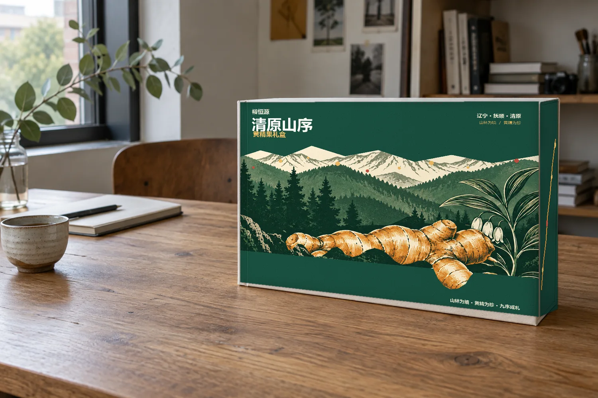
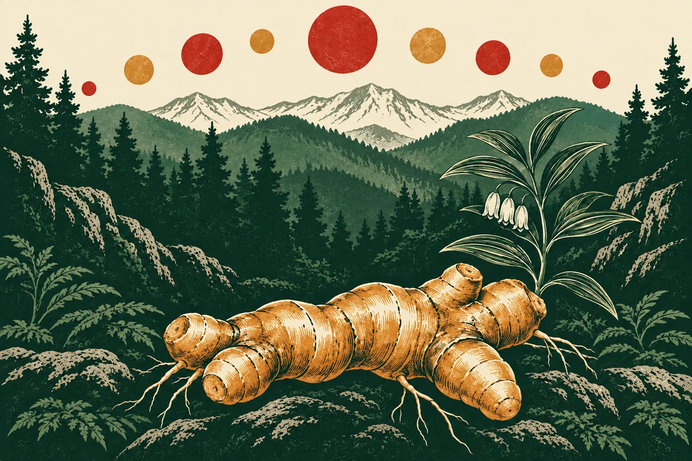
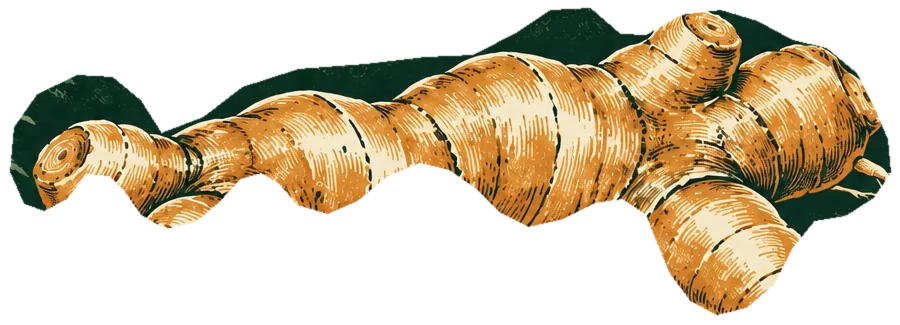
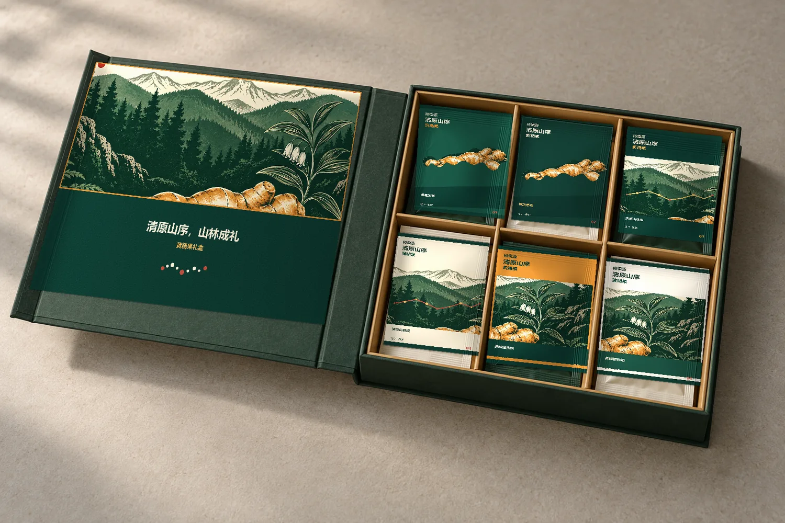

地域印象
01｜走进清原
山林，不只是背景，
也是这份礼物的地域记忆。
01辽宁省域印象
02抚顺城市印象
03清原故事起点
围绕辽宁清原山地、森林意象与地方农特产品文化展开，表达“地域是产品故事的起点”。图示仅呈现概念关系，不表示精确行政区界或山脉坐标。
植物与视觉
02｜认识黄精
让根茎的形态，
成为一盒山林故事的起笔。
黄精是本项目的核心视觉与产品元素。设计以黄精根茎形态作为包装视觉核心，并将山脉、森林与植物轮廓重新组织为版画语言。
药食文化中的传统植物元素
山林植物意象 · 包装视觉提炼


本页介绍设计中的植物意象，不涉及医疗、治疗或保健功效说明。
设计路径
03｜一盒山序
01
清原山林
02
黄精植物
03
视觉提炼
04
版画语言
05
礼盒
06
六袋独立包装
07
礼赠体验
我们没有把山林直接画进包装，而是将山脉、森林、黄精根茎和植物形态，重新组织成一套现代版画视觉语言。
六袋系列
04｜六袋 · 六景
六袋沿用包装 Master 系统的编号、构图与顺序。轻触一袋，查看它在系列中的视觉主题。
01 / 06
黄精根茎组
以黄精根茎形态作为画面中心，呈现本系列的核心视觉元素。
礼盒系统
05｜开启山林
外盒讲述清原山林，打开之后，六袋独立包装将黄精、山林与植物图形进一步展开，形成从包装到分享的完整礼赠体验。

以上展示为包装方案效果图；盒型尺寸、材料和生产工艺待企业及供应商确认。
方案建议
06｜少一点包装，多一点山林
让结构与材料
回到必要之处。
- 减少非必要包装层级
- 优先考虑纸基内托
- 礼盒结构可重复利用
- 优先选用可回收纸材
- 印刷工艺控制在必要范围
- 以模块化设计降低系列开发成本
以上为本设计方案的材料与生产建议，最终工艺以企业及供应商打样确认结果为准。
扫码体验
07｜让包装继续讲故事
包装不仅承担保护与视觉功能，扫码后还能继续了解清原地域、黄精植物、包装设计、礼盒系统与品牌入口。这个页面就是二维码对应的互动内容。
- 01扫码
- 02清原
- 03黄精
- 04设计
- 05礼盒
- 06品牌
品牌入口
08｜认识裕恒源
本页为包装设计配套数字体验，不是政府溯源系统。未展示种植批次、生产批次、检测报告或认证信息；产品信息与购买方式以企业正式发布为准。